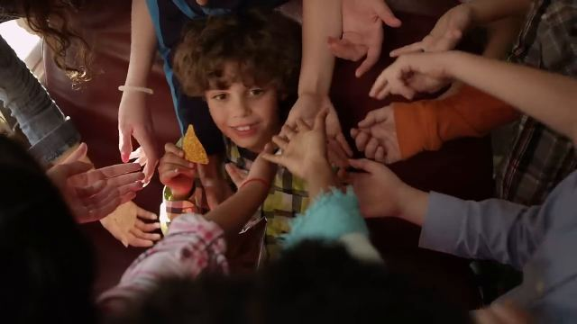
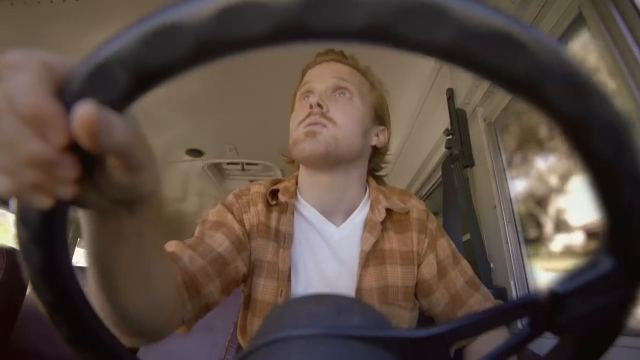
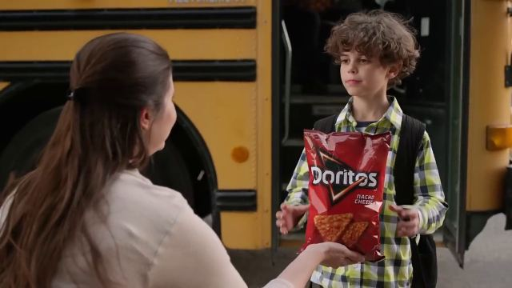

เรียนภาษาภาพ
ตั้งแต่ ศูนย์ จนเขียนตอบได้
เว็บนี้สอนเรื่องที่อาจารย์เปิดให้ดูบนจอในห้อง ทั้งขนาดภาพ มุมกล้อง การเคลื่อนกล้อง และการอ่านสเปคอุปกรณ์ แต่ละบทมีของให้ลองกดเล่น เพื่อให้ "เห็นภาพ" มากกว่าท่องจำ
ขนาดภาพ: ผู้ชมอยู่ห่างตัวละครแค่ไหน
ขนาดภาพ (Shot Size) คือ "ตัวละครใหญ่หรือเล็กแค่ไหนในเฟรม" เราวัดจากร่างกายคน ว่าขอบล่างของภาพตัดที่ส่วนไหนของตัว
ลองเลื่อน: กล้องค่อย ๆ เข้าใกล้ตัวละคร
| ขนาดภาพ | ขอบเฟรมตัดที่ | ใช้เพื่อ / สื่อความรู้สึก |
|---|
ฝึกจำ: กดการ์ดเพื่อดูคำตอบ
มุมกล้อง: กล้องมองตัวละครจากระดับไหน
มุมกล้อง (Camera Angle) คือ "กล้องอยู่สูงหรือต่ำแค่ไหนเมื่อเทียบกับตัวละคร" ตัวละครคนเดียวกัน ถ่ายคนละมุม ผู้ชมจะรู้สึกต่อเขาต่างกัน
ลองย้ายกล้อง: เลือกมุมแล้วดูทั้งตำแหน่งกล้องและภาพที่ได้
ตำแหน่งกล้อง (มองจากด้านข้าง)
ภาพที่ผู้ชมเห็น (จำลอง)
| มุมกล้อง | กล้องอยู่ตรงไหน | ผู้ชมรู้สึกอย่างไร |
|---|
| คู่ที่ชอบสับสน | จำแบบนี้ |
|---|---|
| Aerial vs Overhead | Aerial = สูงมากและไกล เห็นพื้นที่กว้าง (โดรน) · Overhead = อยู่เหนือหัว มองลงตั้งฉาก เห็นการจัดวาง (ถ่ายอาหารบนโต๊ะ) |
| High Angle vs Overhead | High = มองลงแบบเฉียง ยังเห็นหน้า · Overhead = มองลงตรง ๆ เหมือนแผนผัง |
| Low Angle vs Worm's Eye | Low = ต่ำกว่าตัวละคร เงยขึ้นปานกลาง · Worm's Eye = อยู่ที่พื้น เงยขึ้นเกือบตั้งฉาก ทุกอย่างดูใหญ่โต |
| Ground Level vs Worm's Eye | ทั้งคู่วางกล้องที่พื้น · Ground Level มองขนานพื้น · Worm's Eye มองขึ้นฟ้า |
| POV vs OTS | POV = เห็นสิ่งที่ตัวละครเห็น ไม่เห็นตัวคนที่มอง · OTS = เห็นไหล่และหลังหัวอยู่ในเฟรม |
| Dutch Angle vs Roll | Dutch = กล้อง เอียงค้าง (เป็นมุมกล้อง) · Roll = กล้อง กำลังหมุน (เป็นการเคลื่อนกล้อง บทที่ 3) |



ฝึกจำ: กดการ์ดเพื่อดูคำตอบ
การเคลื่อนกล้อง: กล้องขยับระหว่างถ่าย
การเคลื่อนกล้อง (Camera Movement) คือ "กล้องทำอะไรระหว่างที่กำลังถ่าย" หมุน เลื่อน ยก หรือซูม ทั้งหมด 16 แบบ แบ่งได้เป็น 3 กลุ่มใหญ่
ทดลองเปรียบเทียบ: Zoom กับ Push In ต่างกันตรงไหน (ข้อสอบชอบถาม)
ดูที่ ภูเขาด้านหลัง ตอนกดเล่น: Zoom ขยายทุกอย่างเท่ากัน ส่วน Push In ทำให้คนใหญ่ขึ้นเร็วกว่าภูเขา เพราะกล้องเดินเข้าไปจริง
ZOOM ภาพแบน ฉากหลังขยายพอ ๆ กับคน
PUSH IN / DOLLY มีมิติ คนขยายเร็วกว่าฉากหลัง
กดเล่นทีละแบบ
สีป้ายบอกกลุ่ม: ไม่ขยับ หมุนอยู่กับที่ ย้ายตัวกล้อง ใช้เลนส์
| คู่เปรียบเทียบ | ต่างกันอย่างไร |
|---|---|
| Zoom vs Push In / Dolly | Zoom ใช้เลนส์ กล้องไม่ขยับ ทุกอย่างขยายเท่ากัน ภาพดูแบน · Push In/Dolly ย้ายกล้องจริง ของใกล้ขยายเร็วกว่าของไกล ภาพมีมิติ เหมือนผู้ชมเดินเข้าไป |
| Pan vs Trucking | Pan หมุนกล้องอยู่กับที่ · Trucking ย้ายกล้องทั้งตัวเลื่อนไปด้านข้าง |
| Tilt vs Boom/Crane | Tilt ก้มเงยอยู่กับที่ · Boom ยกกล้องทั้งตัวขึ้นหรือลง |
| Pan vs Whip Pan / Zoom vs Crash Zoom | ทิศเดียวกัน ต่างกันที่ความเร็ว แบบ Whip/Crash เร็วมาก ใช้สร้างความตื่นเต้น ช็อก หรือเปลี่ยนฉาก |
| Tracking vs Trucking | Tracking เคลื่อนตามตัวแบบไปทิศใดก็ได้ · Trucking เลื่อนด้านข้าง ไม่จำเป็นต้องตามใคร |
| Static vs Random | Static นิ่งสนิท สงบ มั่นคง · Random/Handheld สั่น ไม่มีแบบแผน วุ่นวาย สมจริง |
ฝึกจำ: กดการ์ดเพื่อดูคำตอบ
รวม 3 อย่าง: ขนาดภาพ + มุมกล้อง + การเคลื่อนกล้อง
ในการถ่ายจริง ทุกช็อตมีทั้ง 3 อย่างพร้อมกันเสมอ ลองเลือกแต่ละหมวด แล้วกด "เล่นช็อตนี้" ด้านล่างจะสรุปให้ว่าช็อตที่ได้สื่ออะไร และเขียนตอบข้อสอบอย่างไร
ภาพจำลองเป็นภาพแบน จึงไม่เห็นมิติแบบกล้องจริง ถ้าอยากเห็นความต่างของ Zoom กับ Push In ให้ดูบทที่ 3
อ่านสเปค แล้วทายให้ได้ว่าเป็นอุปกรณ์อะไร
สเปค (Specification) คือ "ใบบอกคุณสมบัติ" ของอุปกรณ์ เหมือนฉลากอาหารที่บอกว่ามีอะไรอยู่ข้างใน ข้อสอบจะให้สเปคมา เราต้องดูว่าตัวเลขและคำในสเปคบอกอะไร แล้วสรุปว่าเป็นอุปกรณ์ชนิดไหน
ขั้นที่ 2: ศัพท์ในสเปคเสียงที่ต้องรู้
| คำในสเปค | แปลว่า | อ่านค่าอย่างไร |
|---|---|---|
| Frequency Response Hz–kHz | ช่วงเสียงต่ำถึงสูงที่อุปกรณ์รับหรือเล่นได้ | หูคนได้ยิน 20 Hz – 20 kHz · ช่วงยิ่งกว้าง ยิ่งเก็บเสียงได้ครบ |
| Impedance Ω โอห์ม | ความต้านทานไฟฟ้า | หูฟัง 16–32 Ω ใช้กับมือถือได้ · 80–300 Ω ต้องใช้แอมป์ (งานสตูดิโอ) |
| Sensitivity mV/Pa · dB | ไมค์: รับเสียงไวแค่ไหน · หูฟัง/ลำโพง: ดังแค่ไหน | ไมค์คอนเดนเซอร์ไวกว่าไมค์ไดนามิกมาก |
| Max SPL dB SPL | เสียงดังที่สุดที่ไมค์รับได้โดยไม่แตก | ค่าสูง (130 dB ขึ้นไป) รับกลองหรือแอมป์กีตาร์ได้ |
| Self-noise / S/N dB(A) | เสียงซ่าในตัวอุปกรณ์ | Self-noise ต่ำ ยิ่งดี · S/N Ratio สูง ยิ่งดี |
| Phantom Power +48V | ไฟเลี้ยงที่ส่งไปทางสาย XLR | ไมค์คอนเดนเซอร์ต้องใช้ ไมค์ไดนามิกไม่ต้องใช้ |
| Polar Pattern | ทิศทางที่ไมค์ได้ยิน | ดูเครื่องมือด้านล่าง |
| Sample Rate / Bit Depth kHz / bit | ความละเอียดตอนแปลงเสียงเป็นดิจิทัล | 48 kHz / 24-bit ขึ้นไป = ระดับงานโปร |
| Connector | ช่องเสียบ | XLR 3 ขา (งานโปร) · TRS 6.35 มม. · 3.5 มม. · USB-C · Speakon (ลำโพงเวที) |
ขั้นที่ 3: Polar Pattern ไมค์ "ได้ยิน" ทางไหน
ไมค์ชี้ขึ้นด้านบน (0° = ด้านหน้า) ส่วนสีแดงคือบริเวณที่ไมค์รับเสียงได้ดี กดเลือกเพื่อดูแต่ละแบบ
อ่านสเปคจริงทีละบรรทัด (แบบที่ข้อสอบให้มา)
สเปคจริงจากหน้าร้าน 3 ตัว กดแต่ละบรรทัดเพื่อดูว่าแปลว่าอะไร บรรทัดที่มีป้าย ● คำใบ้ คือบรรทัดที่บอกได้ทันทีว่าเป็นอุปกรณ์อะไร
ประเภทอุปกรณ์แต่ละหมวด แตกย่อยครบ
อาจารย์อาจถามให้บอก "ชนิดย่อย" เช่น ไมค์ชนิดไหน หูฟังแบบไหน กดเลือกหมวดด้านล่าง ทุกการ์ดมี คำใบ้ในสเปค ไว้ใช้แยกชนิด
ขั้นที่ 4: รู้จักอุปกรณ์ทีละชิ้น
| ถ้าในสเปคมีคำว่า… | น่าจะเป็น |
|---|---|
| Polar pattern, Frequency response, Sensitivity, Max SPL | ไมโครโฟน |
| + "Phantom power +48V required", diaphragm 1 นิ้ว, self-noise | ไมค์คอนเดนเซอร์ |
| + ไม่ต้องใช้ไฟ, ทนทาน, Cardioid, ~50 Hz–15 kHz | ไมค์ไดนามิก |
| + Supercardioid/Lobar, ยาว 20–30 ซม., ใช้กับ boom pole | ไมค์ช็อตกัน |
| + Omni, เล็กมาก, คลิปหนีบ, 3.5 มม. | ไมค์หนีบปก (Lavalier) |
| + Transmitter/Receiver, UHF หรือ 2.4 GHz, ระยะ (ม.), แบตเตอรี่ | ไมค์ไร้สาย |
| Driver 40–50 มม., Impedance Ω, Closed/Open-back | หูฟัง |
| Woofer + Tweeter, Bi-amp วัตต์, Flat response | ลำโพงมอนิเตอร์สตูดิโอ |
| Channels, Mic/Line input, EQ, Aux send, Fader, FX | มิกเซอร์เสียง |
| Inputs 2 ช่อง + preamp, 24-bit/192 kHz, USB-C, Direct monitor | ออดิโออินเตอร์เฟซ |
| ขนาดนิ้ว, Resolution, Refresh rate, Response time, IPS, nits, sRGB | จอภาพ |
| Sensor Full Frame/APS-C, MP, ISO, 4K 60p, 10-bit | กล้อง |
| Focal length มม., Aperture f/, Mount | เลนส์ |
| Color temperature K, CRI, Lux @1m, Watt | ไฟ LED ถ่ายทำ |
ตัวอย่าง: อุปกรณ์นี้คือไมโครโฟนคอนเดนเซอร์ เพราะต้องใช้ Phantom Power +48V และมีช่วงความถี่ 20 Hz–20 kHz แสดงว่ารับเสียงไวและเก็บเสียงได้ครบช่วงที่หูคนได้ยิน จึงเหมาะกับงานอัดเสียงร้องหรือพากย์เสียงในสตูดิโอ
เครื่องมือ AI ที่ทำในใบงาน
สองงานนี้เป็นงานปฏิบัติ ถ้าออกสอบน่าจะถามหลักการและเหตุผล ไม่ได้ถามวิธีกดปุ่ม
Suno AI สร้างเพลง
Generative AI ที่สร้างดนตรี ทำนอง และเสียงร้องจากข้อความ
- ขั้นตอน: คิดคอนเซ็ปต์ (เล่าอะไร อารมณ์ไหน ใครฟัง) → เลือกแนวเพลง จังหวะ Mood → เขียนเนื้อเพลง → เขียน prompt
- Prompt ที่ดี = แนวเพลง + อารมณ์ + จังหวะ (BPM) + เครื่องดนตรี + เสียงร้อง + ภาษา
- แท็กแบ่งท่อน: [Intro] [Verse] [Chorus] [Bridge] [Outro]
- ทำไมต้องคิดคอนเซ็ปต์ก่อน: เพื่อให้เพลงสื่อความหมายตรงเป้าหมายและเข้ากับภาพ ไม่ใช่ได้เพลงสุ่ม
- จริยธรรม: ไม่เลียนแบบศิลปินจริง ตรวจสิทธิ์การใช้งาน บอกว่าใช้ AI
Minimax โคลนเสียง
AI เรียนรู้ลักษณะเสียงของเรา (ระดับเสียง น้ำเสียง จังหวะ) แล้วพูดข้อความใหม่ด้วยเสียงนั้น
- เงื่อนไขในใบงาน: บท 3 สไตล์ (พูดคุย / ทางการ / อารมณ์) · วรรณยุกต์ครบ 5 เสียง · มีประโยคคำถาม · เว้นจังหวะหายใจ · รวมไม่เกิน 60 วินาที
- เหตุผล: AI ได้ตัวอย่างระดับเสียงและช่วงเสียงครบ เสียงที่โคลนจึงเป็นธรรมชาติ ภาษาไทยมีวรรณยุกต์ ถ้าตัวอย่างไม่ครบ เสียงโคลนจะเพี้ยน
- อัดให้ดี: ห้องเงียบ ไม่ก้อง ไมค์ห่างปากประมาณ 1 คืบ
- จริยธรรม: โคลนเฉพาะเสียงตัวเองหรือได้รับอนุญาต ห้ามใช้หลอกลวง เสียงเป็นข้อมูลส่วนบุคคล (PDPA)
ทดสอบรวม 20 ข้อ
ผสมทุกบท ตอบผิดได้ไม่เป็นไร อ่านเหตุผลหลังตอบ เพราะเหตุผลคือสิ่งที่ต้องเขียนในข้อสอบจริง